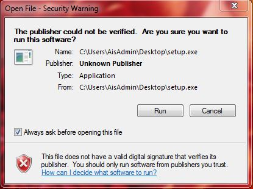
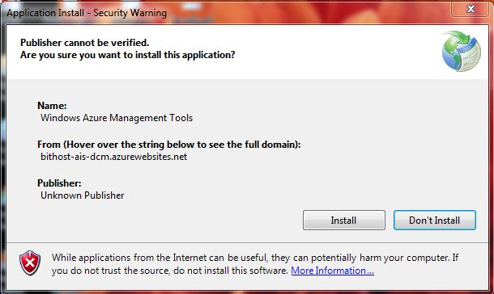
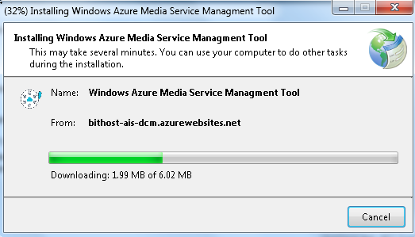

AIS Windows Azure Media Services Management Tool
- Install the AIS Windows Azure Media Services Management application by clicking here
- Executing the setup can give you a security alert. Please let the setup run.



- This setup will install "Windows Azure Media Services Management Tool" application in your system
- Once the application starts click on the Account Setting button verify if the URL is :
http://aismediaapi.azurewebsites.net